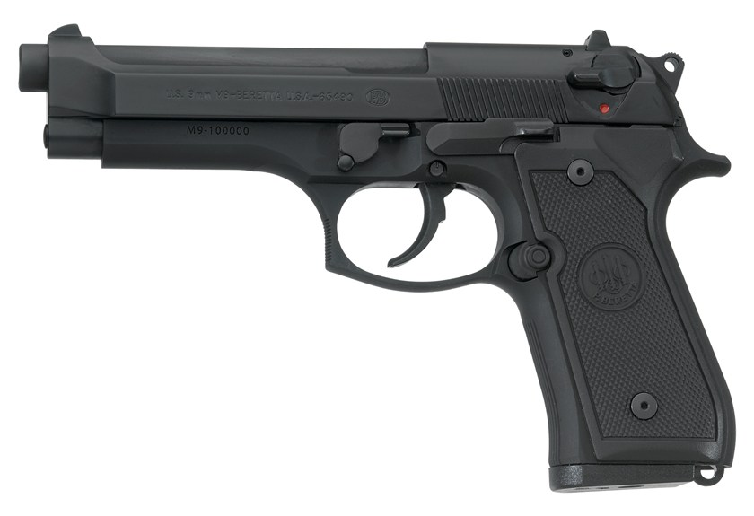

We would like to welcome you to our site, please click below.
M-4 Carbine
The M-4 Carbine is a lightweight, gas operated, magazine fed, shoulder fired weapon that can be fired in a semi-automatic or burst mode.
This weapon shoots 5.56mm ammunition which can travel up to 2,900 feet per second. It is 33 inches long and weighs 7.5 pounds with a loaded magazine,
which has a capacity of 30 rounds.
The M-4 can effectively engage a point target up to 500 meters and an area target up to 600 meters.
This is the primary Duty weapon for Security Forces and all members should be knowledgeable and proficient with its capabilities.
To learn more about the M-4 Carbine Rifle click here!

Rates of Fire:
- Sustained - 12 to 15 rounds per minute
- Rapid - 45 rounds per minute
- Burst - 90 rounds per minute
Cycle of Operations:
- Firing
- Unlocking
- Extracting
- Ejecting
- Cocking
- Feeding
- Chambering
- Locking
M-9 Beretta
The M-9 Beretta is lightweight, short-recoil, semiautomatic pistol that fires 9mm ammunition. The magazine is a staggered design that hold up to 15 rounds.
It is 8.54 inches long, 5.51 inches tall, and weighs 2.55 pounds fully loaded.
This is a Security Forces member’s alternate weapon, or side arm, and meant to be used in any case his or her primary weapon is unavailable.
It replaced
the M1911A1 .45 caliber pistol due to its enhanced safety features, which includes a safety
selector lever and the half cock of the hammer, and its usability.
The 9mm ammunition is more affordable and creates less of a recoil when firing
the weapon, this allows shooters to keep their sites on target with better
accuracy.
To learn more about the M-9 Beretta Pistol click here!

Specifications:
- Maximum effective range - 50 meters
- Maximum range - 1,800 meters
- Muzzle velocity - 1,200 feet per second